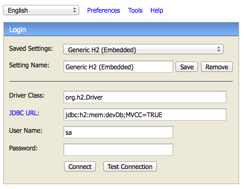
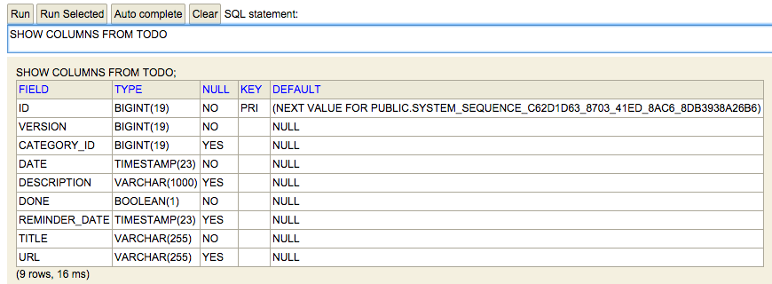

Framework Grails
Sesión 5: Patrón MVC: Dominios y servicios.
Índice
- Dominios
- Servicios
Dominios
- Creación de dominios
- Relaciones entre clases de dominio
Creación de dominios
grails create-domain-class es.ua.expertojava.todo.todo
¿Qué sucede exactamente?
package es.ua.expertojava.todo
class Todo {
String title
String description
Date date
Date reminderDate
String url
Boolean done = false
Category category
static hasMany = [tags:Tag]
static belongsTo = [Tag]
static constraints = {
title(blank:false)
description(blank:true, nullable:true, maxSize:1000)
date(nullable:false)
reminderDate(nullable:true)
url(nullable:true, url:true)
done(nullable:false)
category(nullable:true)
}
String toString(){
title
}
}
Base de datos
- http://localhost:8080/todo/dbconsole

Table todo
- SHOW COLUMNS FROM TODO

Nuevas columnas
- Columna id, clave primaria y autoincremental
- Columna version, garantiza la integridad transaccional
Nombre de las columnas
- Campos en las clases de dominio: CamelCase
- Columnas en las tablas: snake_case
Claves ajenas
- clase/table seguido de _id
- Por ejemplo, category_id
Tipos de datos
- Depende de la base de datos
- String por varchar
- Date por timestamp
Relaciones entre clases de dominio
- Uno a uno
- Uno a muchos
- Muchos a muchos
Uno a uno
- Un objeto de la clase A está únicamente relacionado con un objeto de la clase B
- Un libro sólo puede tener una reserva y una reserva pertenece siempre a un único libro
Uno a uno
class Book{
}
class ActiveOperation{
....
Book book
....
}
Relación unidireccional desde las operaciones activas hacia los libros
Uno a uno
class Book{
....
ActiveOperation actoper
....
}
class ActiveOperation{
....
static belongsTo = [book:Book]
....
}
Inserciones y borrados en cascada.
Uno a uno
class Book{
....
static hasOne = [actoper:ActiveOperation]
static constraints = {
actoper unique:true
}
....
}
class ActiveOperation{
....
Book book
....
}
Relación bidireccional entre libros y operaciones activas y columna book_id en la tabla active_operation
Uno a muchos
class Category {
....
static hasMany = [todos:Todo]
....
}
class Todo {
....
Category category
....
}
Inserciones y actualizaciones en cascada
Uno a muchos
class Category {
....
static hasMany = [todos:Todo]
....
}
class Todo {
....
static belongsTo = [category:Category]
....
}
Borrados en cascada
Uno a muchos
//Ejemplo para insertar datos en relaciones
def todo = new Todo(title:"Limpiar cocina", description:"Limpiar la cocina a fondo", ...)
def category = new Category(name:"Hogar")
category.addToTodos(todo)
category.save()
//Ejemplo para eliminar datos de relaciones
category.removeFromTodos(todo)
category.save()
//Ejemplo para buscar tareas dentro de una categoría
def todosfound = category.todos.find {it.title = "Limpiar cocina"}
Muchos a muchos
- Un registro de la clase A puede estar relacionado con muchos registros de la clase B y viceversa
- Relación entre etiquetas y tareas
Muchos a muchos
class Tag{
....
static hasMany = [todos:Todo]
....
}
class Todo{
....
static hasMany = [tags:Tag]
static belongsTo = Tag
....
}
Restricciones
- Restricciones predefinidas en GORM
- Construir tus propias restricciones
- Mensajes de error de las restricciones
Restricciones predefinidas en GORM
package es.ua.expertojava.todo
class Todo {
String title
String description
Date date
Date reminderDate
String url
Boolean done = false
Category category
static hasMany = [tags:Tag]
static belongsTo = [Tag]
static constraints = {
title(blank:false)
description(blank:true, nullable:true, maxSize:1000)
date(nullable:false)
reminderDate(nullable:true)
url(nullable:true, url:true)
done(nullable:false)
category(nullable:true)
}
String toString(){
title
}
}
Restricciones predefinidas en GORM
- blank
- creditCard
- password
- inList
- matches
- max
- min
Restricciones predefinidas en GORM
- minSize
- maxSize
- notEqual
- nullable
- range
- scale
- size
- unique
- url
Restricciones predefinidas en GORM para UI
- display
- editable
- format
- password
Ejemplo de restricción
date(nullable:true,
validator: {
if (it) {
return it?.after(new Date())
}
return true
}
)
A tener en cuenta
- El closure validator debe devolver true o false
- Con la variable it accedemos al valor introducido
- Si pasamos dos variables, accedemos al objeto y al valor
Pasando objeto y valor
reminderDate(nullable:true,
validator: { val, obj ->
if (val && obj.date) {
return val.before(obj?.date)
}
return true
}
)
Reutilizar restricciones
grails.gorm.default.constraints = {
max20chars(nullable: false, blank: false, maxSize:20)
}
class User {
...
static constraints = {
password shared: "max20chars"
}
}
Mensaje de error de las restricciones
- Sistema jerárquico
- Basado en diferentes aspectos
- Clase de dominio, propiedad o tipo de validación
Mensaje de error de las restricciones
- todo.title.blank.error.title
- todo.title.blank.error.java.lang.String
- todo.title.blank.error
- todo.title.blank.title
- todo.title.blank.java.lang.String
- todo.title.blank
- blank.title
- blank.java.lang.String
- blank
Mensaje de error de las restricciones
- Si no encuentra ninguna, se imprime default.blank.message
- Para nuestros validadores empezarían por todo.date.validator.error.date
Aspectos avanzados de GORM
- Ajustes de mapeado
- Herencia de clases
- Propiedades transitorias
- Eventos GORM
- Fechas automáticas
Ajustes de mapeado
- Nombres de las tablas y columnas
- Deshabilitar el campo versión
- Carga perezosa de los datos
- Sistema caché
- Modificar la clave primaria
static mapping = {
//Todo el mapeado de la tabla aquí
}
Nombres de las tablas y columnas
class Todo {
....
static mapping = {
table 'tbl_todo'
description column:'desc'
}
}
Deshabilitar el campo versión
class Todo {
....
static mapping = {
version false
}
}
Carga perezosa de los datos
class Person {
String firstName Pet pet
static hasMany = [addresses: Address]
static mapping = {
addresses lazy: false
pet fetch: 'join'
}
}
class Address {
String street
String postCode
}
class Pet {
String name
}
Sistema caché
grails-app/conf/DataSource.groovy
hibernate {
cache.use_second_level_cache = true
cache.use_query_cache = true
cache.region.factory_class = 'net.sf.ehcache.hibernate.EhCacheRegionFactory'
singleSession = true
flush.mode = 'manual'
}
Sistema caché
class User {
...
static mapping = {
table 'tbl_users'
cache usage: 'read-only', include: 'non-lazy'
}
}
Sistema caché
class Person {
String firstName
static hasMany = [addresses: Address]
static mapping = {
table 'people'
version false
addresses column: 'Address', cache: true
}
}
Modificar la clave primaria
static mapping = {
id composite: ['title', 'category']
}
Herencia de clases
class User{
....
}
class Administrator extends User{
....
}
class Registered extends User{
....
}
class Guest extends User{
....
}
Herencia de clases
- Todos los datos en la misma tabla
- Se diferencia por un campo class
- Podemos tener una tabla por cada tipo
Herencia de clases
class User{
....
}
class Administrator extends User{
static mapping = {
table = 'administrator'
}
}
class Registered extends User{
static mapping = {
table = 'registered'
}
}
class Guest extends User{
static mapping = {
table = 'guest'
}
}
Herencia de clases
class User{
.....
static mapping = {
tablePerHierarchy false
}
}
Propiedades transitorias
class User {
static transients = ["confirmPassword"]
String username
String password
String confirmPassword
String name
String surnames
}
Eventos GORM
class Todo {
....
User createdBy
User lastModifiedBy
def beforeInsert = {
createdBy = session?.user
lastModifiedBy = session?.user
}
def beforeUpdate = {
lastModifiedBy = session?.user
}
}
Eventos GORM
- beforeDelete()
- beforeValidate()
- afterInsert()
- afterUpdate()
- afterDelete()
- onLoad()
Fechas automáticas
class Todo {
....
Date dateCreated
Date lastUpdated
}
Fechas automáticas
Si queremos desactivar esta característica
static mapping = {
autoTimestamp false
}
Interactuar con la base de datos
- Consultas dinámicas de GORM
- Consultas HQL de Hibernate
- Consultas Criteria de Hibernate
Consultas dinámicas de GORM
- count()
- countBy()
- findBy()
- findWhere()
- findAllBy()
- findAllWhere()
- get()
- getAll()
- list()
- listOrderBy()
Comparaciones
- InList
- LessThan
- LessThanEquals
- GreaterThan
- GreaterThanEquals
- Like
- ILike
- NotEqual
- Between
- IsNotNull
- IsNull
Ejemplo con GORM
Todo.findAllByTitleAndDescriptionAndDone('Pintar cocina',null,false)
Consultas HQL de Hibernate
- find()
- findAll()
- executeQuery()
Consultas HQL de Hibernate
def sentenciaHQL1 = Todo.find("From Todo as t")
Consultas HQL de Hibernate
def hqlsentence2 = Todo.findAll("from Todo as t where t.title='Pintar cocina'")
def hqlsentence3 = Todo.findAll("from Todo as t where t.title=?", ["Escribir tests unitarios"])
def hqlsentence4 = Todo.findAll("from Todo as t where t.title=:title", [title:"Cocinar pastel"])
Consultas HQL de Hibernate
- max
- offset
- sort
- order
Consultas HQL de Hibernate
Todo.executeQuery("select date from Todo t where t.title='Pintar cocina'")
Consultas Criteria de Hibernate
void nextTodos() {
def c = Todo.createCriteria()
def result = c{
between("date",new Date(),new Date()+10)
maxResults(15)
order("date","asc")
}
}
Consultas Criteria de Hibernate
- between
- eq
- eqProperty
- gt
- gtProperty
- ge
- geProperty
Consultas Criteria de Hibernate
- idEq
- ilike
- in
- isEmpty
- isNull
- isNotNull
- lt
- ltProperty
- le
Consultas Criteria de Hibernate
- like
- ne
- neProperty
- order
- rlike
- sizeEq
- sizeGt
- sizeGe
- sizeLt
- sizeLe
- sizeNe
Consultas Criteria de Hibernate
and {
between("date", new Date()-10, new Date())
ilike("content", "%texto%")
}
or {
between("date", new Date()-10, new Date())
ilike("content", "%texto%")
}
not {
between("date", new Date()-10, new Date())
ilike("content", "%texto%")
}
Servicios
- Responsable de la lógica de negocio
- No es aconsejable acumular todo el código en el controlador
- Clases ubicadas en el directorio grails-app/services que terminan con la palabra Service
Servicio ejemplo
grails create-service es.ua.expertojava.todo.todo
Servicio ejemplo
package es.ua.expertojava.todo
import grails.transaction.Transactional
@Transactional
class TodoService {
def serviceMethod() {
}
}
Tipos de transaccionalidad
import grails.transaction.Transactional
class BookService {
@Transactional(readOnly = true)
def listBooks() {
Book.list()
}
@Transactional
def updateBook() {
// ...
}
def deleteBook() {
// ...
}
}
Servicio ejemplo
package es.ua.expertojava.todo
import grails.transaction.Transactional
class TodoService {
def getNextTodos(Integer days, params) {
Date now = new Date(System.currentTimeMillis())
Date to = now + days
Todo.findAllByDateBetween(now, to, params)
}
def countNextTodos(Integer days) {
Date now = new Date(System.currentTimeMillis())
Date to = now + days
Todo.countByDateBetween(now, to)
}
}
Servicio ejemplo
class TodoController {
def todoService
....
def listNextTodos(Integer days) {
respond todoService.getNextTodos(days, params),
model:[todoInstanceCount: todoService.countNextTodos(days)],
view:"index"
}
....
}
Servicio ejemplo
curl -v -H "Accept: text/xml" -H "Content-type: text/xml" -X GET http://localhost:8080/todo/todo/listNextTodos?days=2
curl -v -H "Accept: application/json" -H "Content-type: application/json" -X GET http://localhost:8080/todo/todo/listNextTodos?days=2
Ámbito de los servicios
- Por defecto, los servicios son singleton, sólo una instancia en todos los artefactos
- prototype, nueva instancia por servicio inyectado
- request, nueva instancia por cada solicitud HTTP
- flash, nueva instancia por cada solicitud HTTP en la actual y la siguiente
- flow, nueva instancia por cada flujo en un web flow
- conversation, instancia visible para el flujo actual y sus subflujos en un web flow
- session, nueva instancia por cada sesión de usuario
Cambiar el ámbito
class TodoService{
static scope = 'session'
...
}
Servicios web
- Método GET, show()
- Método PUT, update()
- Método POST, save()
- Método DELETE, delete()
Servicios web
Sólo necesitaríamos una url para gestionar nuestra entidad. http://localhost:8080/todo/todo/id_todo
Servicios web
- http://localhost:8080/todo/todo, método GET, show(), listado de las tareas
- http://localhost:8080/todo/todo/4, método GET, show(), datos de la tarea 4
- http://localhost:8080/todo/todo/4, método PUT, update(), actualiza la tarea 4
- http://localhost:8080/todo/todo, método POST, save(), crea una nueva tarea
- http://localhost:8080/todo/todo/4, método DELETE, delete(), elimina la tarea 4